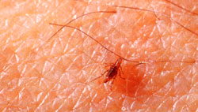

At times they seem to be taking over the world. These bloodsucking pests not only are irritating to man and beast alike, but can also cause severe skin problems in both dogs and cats. Worse yet, as fleas become increasingly resistant to the synthetic chemicals science has produced for their control, pesticide manufacturers are making their products increasingly stronger - and more dangerous - in an attempt to keep pace with the parasites.
As a result of this unhealthy race, household pets are suffering twice: They're chewed on by fleas, and they're used as a battleground for the chemical warfare being waged by their well-meaning owners. In fact, I've often encountered cases of severe poisoning in dogs and cats due to the overzealous application of synthetic-chemical flea treatments. And many of those poisoned animals still have fleas!
Fortunately, there are effective nontoxic ways to do battle with fleas and win. But before we can attempt to control these pests without harming our pets, we must understand the tiny monsters' life cycle and purpose in the natural scheme of things.
The adult dog flea (either Ctenocephalides felis or C. canis) is a wingless insect equipped with a set of powerful hind legs that enable it to jump nine inches straight up or five feet sideways. Like vampires, adult fleas feed only on blood.
But the most important thing to know and remember about the flea is that the majority of its life is spent away from the host animal. Fleas invade our pets only when they need a transfusion.
The female flea prefers to lay her eggs not on your dog or cat, but in dark, damp places such as cracks in the floor or a corner of the basement. (Most of the few eggs that do get laid on host animals soon fall off.) The flea lays up to 20 eggs at a setting and may deposit as many as 400 during her lifetime.
Most flea eggs are laid when humidity is high and temperatures are moderate (65° to 85°F). It takes only about a week for the eggs to hatch into small, white, toothy-mouthed worms. This larval form feeds on feces, debris, hair and vegetation. Its growth cycle, depending on environmental conditions, takes from 10 to 200 days. Each larva then spins a cocoon and pupates for a period that can range from seven days to a year.
Thus, one pair of adult fleas can cause the three stages of offspring - egg, larva, and adult - to be present in your home for almost two years! Combine this with the fact that many commercial pesticides kill only adult fleas, leaving healthy deposits of eggs scattered around your home, and it becomes easy to understand how it is that you can "kill every flea in the house" one week and be greeted by a whole new generation of the miniature Count Draculas the very next.
The adult flea dines by chewing into its victim's flesh until blood appears, then drinks until it's bloated. Fortunately for the host animal, a flea doesn't have to eat very often: A single meal of blood can keep a flea fat and happy for up to two months.
The first step in flea control is to examine your dog or cat to determine the extent of infestation. In severe cases, you'll actually be able to see adult fleas swarming all over the animal's skin and hair.
If no fleas are visible on your pet but the animal is scratching and obviously infected, inspect carefully around the base of the tail. If you find small black particles embedded in the hair, you're looking at flea feces. (If you find such particles but believe they're something other than flea scat, just place a few of them on a damp paper towel. If they turn red, they're flea feces - that's blood residue you're seeing.)
OK, so your dog or cat has fleas. Don't rush off to the store to buy the strongest product you can find in the pet section. Many of today's synthetic insecticides are powerful poisons that had their origin in the development of chemical warfare agents.
Organophosphates and carbamares are two of the most common synthetic pesticides found in flea killers. Both are nerve-paralyzing agents capable of causing convulsions, nausea and respiratory arrest, in host animals as well as in the insects they're intended to destroy. Consequently, there are many cases of pesticide-related poisoning each summer, many involving not only pets, but also children who handle pesticide-treated animals.
Ironically, while pesticide labels contain warnings of their hazards to humans, the application instructions tell you to soak a flea-infected dog or cat thoroughly! These chemicals, especially in liquid form, can be absorbed through the animal's skin and taken up by the blood. For that reason, even in the midst of a flea invasion, it's important not to let the urgency of your need to get rid of the pests override concern for the safety of your pets and household.
In addition to the potential for immediate poisoning, long-term treatment with synthetic pesticides can eventually lead to kidney failure and other medical complications. I'm convinced, for instance, that some of the cancer seen in companion animals is related to the use of chemical pesticides against fleas.
Hidden among the many synthetic pesticides on the market today are three organic flea fighters. The first group of these consists of two varieties of pyrethrin that are derived from the flower heads of several types of Old World chrysanthemums; their pesticidal properties have been utilized for centuries.
A much newer natural agent, d-Limonene, is a by-product of the citrus industry and carries a mild, grapefruitlike odor.
But it's the third of the three natural pesticides that is the safest and that offers the greatest hope. While both pyrethrins and limonenes are much less toxic than the synthetic organophosphates and carbamates, they should still be used with caution. There's only one pesticide, natural or otherwise, that's a specific for insects and completely safe. Diatomaceousearth is a type of fossilized algae that resembles chalk dust. The fine, sharp-edged particles attach themselves to and penetrate the waxy coating on a flea's shell-like exoskeleton, causing the little bloodsucker to dehydrate and die.
Treatment of your home must begin with a thorough cleaning. Frequent vacuuming of the house, especially pet areas, is necessary to keep fleas at bay. Pay special attention to dark, damp places where fleas may have deposited their eggs. After vacuuming, the cleaner bag shouldn't be left in the closet, since the flea eggs it contains can hatch and reinfect your house. Empty the bag and burn the contents, or seal the sweepings in a plastic trash bag and dispose of it properly.
Next, wash your pet's bedding and finish off any six-legged survivors by tumbling the wet bedding in a hot dryer. Diatomaceous earth or powdered pyrethrum - both of which can be found at herb outlets or lawn-and-garden shops (or check with your veterinarian) - should then be sprinkled on the clean pet bedding, as well as on carpets and floors, and worked in with a broom.
Unfortunately, in cases of severe flea infestation it may be necessary to "bomb" your house with a commercial insecticide to annihilate the adult fleas before a natural-insecticide program can be implemented effectively. If you find yourself faced with this necessity, take the time to search out a bomb that contains either pyrethrins (natural) or resmethrin (one of the less dangerous synthetics) as the active ingredient. These are the safest of the "bombers," but, nonetheless, follow the directions on the container exactly. After this initial treatment, an ongoing natural flea-control program should preclude the necessity for further chemical "fogging" in your home.
Controlling fleas on your pets requires endless attention; it's never a onetime or occasional thing. Also, it's important to keep in mind, and learn from, the fact that parasites do have a function in nature's scheme of things, to weed out and finish off unhealthy members of the various host species.
You may have noticed that some animals seem always to be infested with parasite - fleas, worms, ticks, etc .- while others (even in the same household) have only occasional and relatively minor problems. The reason for this can often be found by comparing the general health of the animals' skins. Skin is the fastest-growing organ of an animal's body, with the outer layer of cells being replaced every three weeks. Optimum nutrition is essential for healthy skin; if your pet is not properly nourished, the skin will be the first area of its body to exhibit problems.
Dry, unhealthy skin causes itching, as well as more severe reactions to fleabites, the skin sometimes actually falls apart and bleeds. In such cases, the fleas have a picnic. They don't have to work (that is, chew) to extract their measure of blood, and so appear in huge numbers. If this happens to your pet, it's important to realize that the fleas didn't cause the skin ailments, they only worsened a previously existing situation. With this in mind, I've solved the flea and skin problems of numerous dogs and cats simply by improving their diets.
In addition to proper food, frequent grooming is essential to keep fleas away from your pet. Shampooing with a mild organic lotion soap will kill many fleas by drowning. Afterward, a lemon rinse will tone the cleansed skin, leaving a residual citrus odor that will help repel fleas for a while.
To make such a rinse, slice one whole lemon and drop the slices (peel and all) into a pint of very hot water. Allow the lemonwater to steep overnight, then remove the pulp by filtering or straining. Sponge the lemon rinse onto your pet's skin and allow it to air-dry (don't towel). This treatment is nontoxic and can be repeated daily until the skin condition improves.
There are several herbal sprays, shampoos and flea collars whose odors repel fleas. Citronella, rosemary and wormwood, which are the most common ingredients in these natural treatments, can be found at health food stores and lawn-and-garden shops (or ask your veterinarian). If you'd like to go the budget route, simply purchase dried herbs and make your own flea repellents. All of these herbs are nontoxic and can be used daily. (Caution: Any time you use a flea repellent, natural or otherwise, be sure to put the treated pet outside for a few hours so that the fleas won't reinfest your home as they abandon ship!)
Many dogs and cats seem to benefit in the fight against fleas from the addition of garlic and brewer's yeast to their diets. When these substances are metabolized, an odor (and flavor) that fleas find very unattractive develops in the skin.
One to three fresh garlic cloves, pulverized and mixed with food, may be administered daily. (But keep in mind that garlic will have the same effect on your pet's breath as it does on yours.)
The important flea-control ingredient in brewer's yeast is thiamine (vitamin B). A level of one milligram (1 mg) of thiamine daily for each five pounds of your pet's body weight is ideal. For an average-size cat, this would translate to one teaspoon of brewer's yeast; for a large dog, you might administer one tablespoon of brewer's yeast supplemented with a B-complex vitamin pill. Brewer's yeast can also be dusted on externally as a flea powder. (If your pet licks some off, there's no harm done.)
A third important flea-fighting dietary supplement is zinc. This mineral is essential for healthy skin, but is lacking in many pets' diets. Use chelated (pronounced key-lated) zinc: 10 mg daily for cats and small dogs; 20 mg for larger canines.
These dietary supplements will require close to a month to build up to flea-fighting levels in a pet's skin. So start them in the spring before you find yourself in the midst of a severe flea invasion.
Of course, nothing is likely to completely eliminate fleas forever. However, you can rest assured that your efforts to eliminate and prevent fleas will directly benefit your pet's health and happiness.
And when it comes to those dangerous chemical pesticides, it's nice to know that we can live without them.
|
ISTOCKPHOTO/Heather Down Try these alternative methods to keep your pets flea-free. |
 PHOTO SUPPLIED BY THE USDA |
|